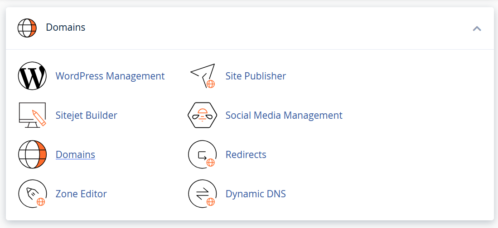
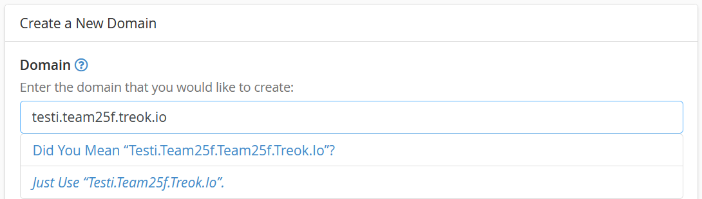
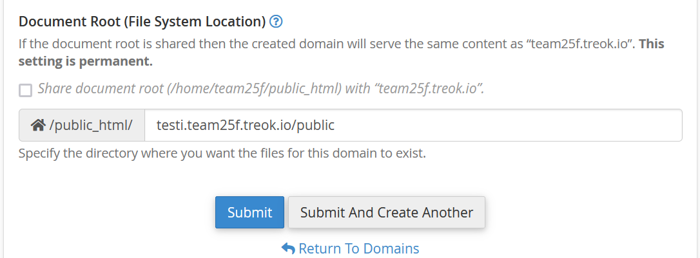
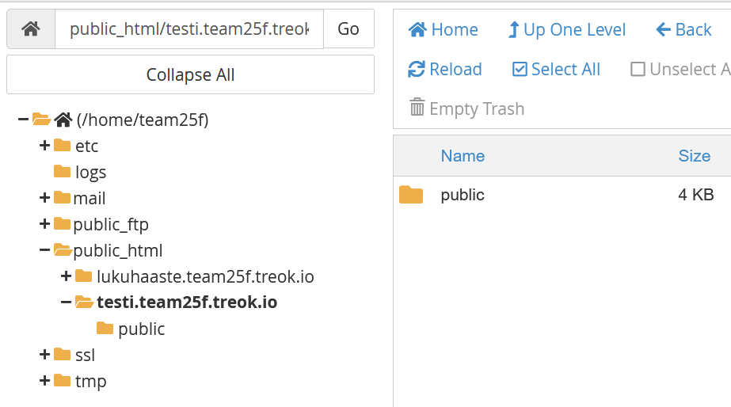

Alidomainin luonti
- Valitse Doamins-sivulta Create A New Domain


- Muista että kansiorakenteessa MVC-mallin juurihakemisto on public-kansio.

- Tee main-haaran toimivasta ohjelmasta zip-paketti paikallisella koneella.
- Tuo kooditiedostot zip-tiedostona juurihakemistoon.

- Pura tiedostot (Extract)
- Tarvittaessa lisää/muokkaa .htaccess-tiedostot public-kansion alla ja aseta tietokannan tunnukset oikein. Tietokannan host yleensä localhost julkisella palvelimella.